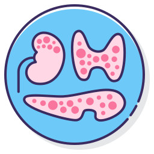
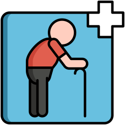

PACIENTES
{{ pac.nombre }} - {{ pac.apellido }}
ESPECIALIDADES


ESPECIALISTAS
{{ esp.apellido }} {{ esp.nombre }}
Actualmente no hay Especialistas que trabajen con {{speciality?.nombre}}
SELECCIÓN DE TURNO
{{ activeEspecialista.apellido }} {{ activeEspecialista.nombre }}
{{ speciality.nombre }}
No hay turnos disponibles